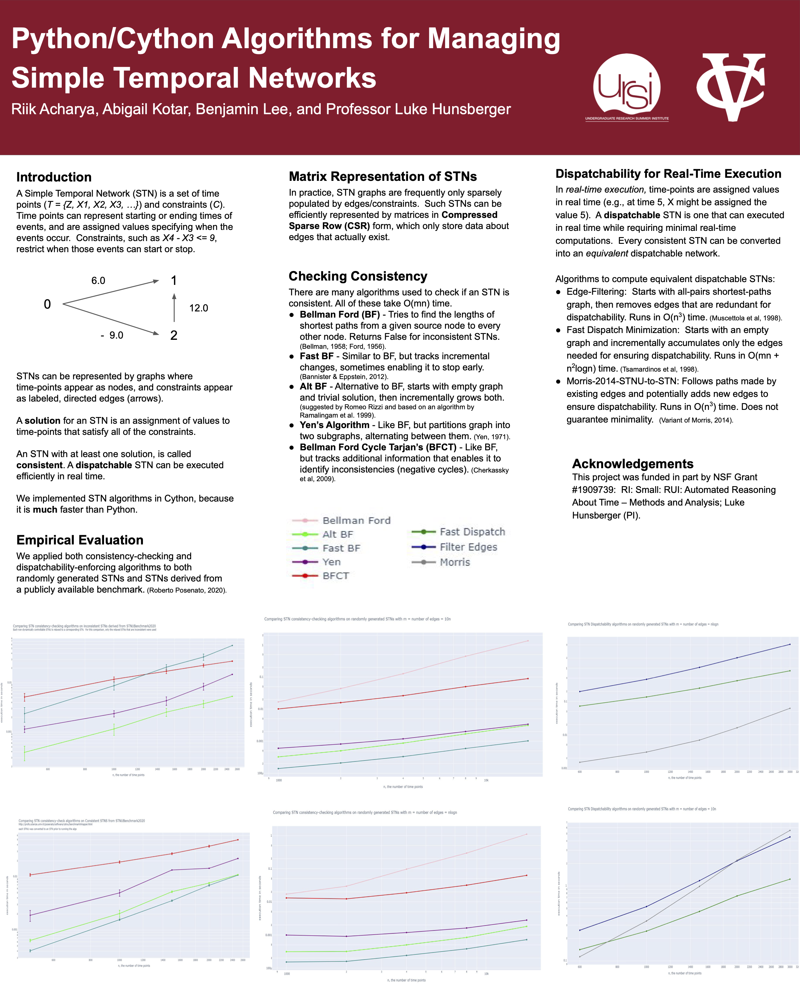

Magic Murder Mystery Android Application.
September 2022 - Present
Made in collaboration with Emily Granville.
In Java, created a story-telling role-playing game for Android. The game features an interactive story where different choices lead to different endings. Each ending is unlocked by gaining approval with different non-player controlled characters. I mainly focused on implementing character customization and coins. The user can customize their own character by selecting different radio buttons. If the user gains enough approval with certain NPCs, they can also customize those NPCs. In addition, coins are given to a player for logging in every 24 hours as well as for completeing a chapter for the first time.
Download on the Android AppWon the "Best Poster" contest at the New York Celebration of Women in Computing (NYCWiC) 2023.
Temporal Network Research
May 2022 - July 2022
Done in the Undegraduate Research Summer Institute at Vassar College under Professor Luke Hunsberger. Summer 2022
Implemented and tested different algorithms that check consistency and dispatchability in temporal networks. I focused on empirically testing the different algorithms using Python. To test different algorithms, I ran the given algorithms on randomly generated STNs (Simple Temporal Networks) and STNs from a benchmark. I used Plotly graphs and timeit to create the different graphs.
